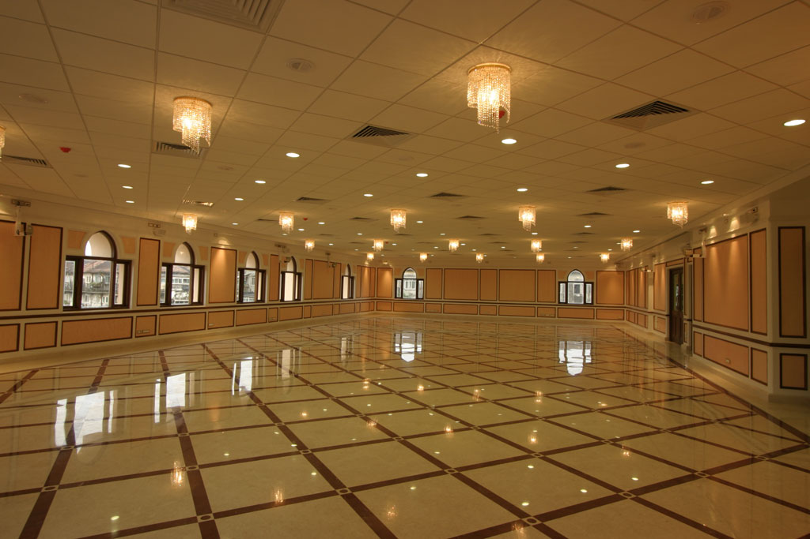
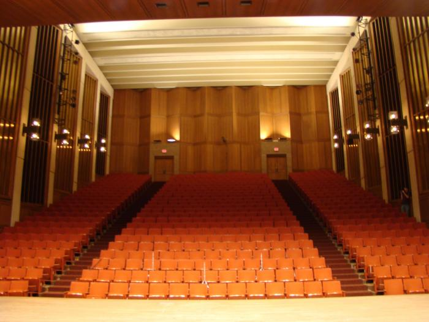
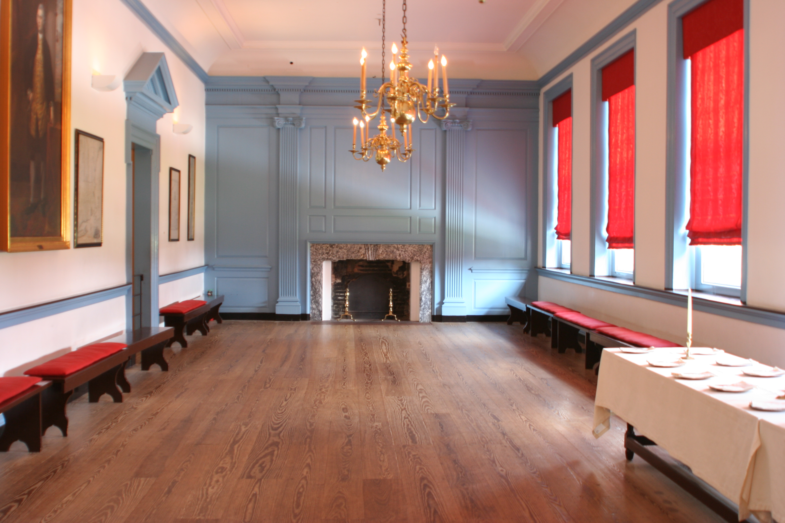

We are looking for originality of thought, analytical rigour, conceptual clarity, as well as breadth of research and source materials (including books, films, articles, and websites)
a critical handling of the secondary sources. We are also looking for a clear structure to the essay, careful copy-editing,
consistent footnoting, and a bibliography.


